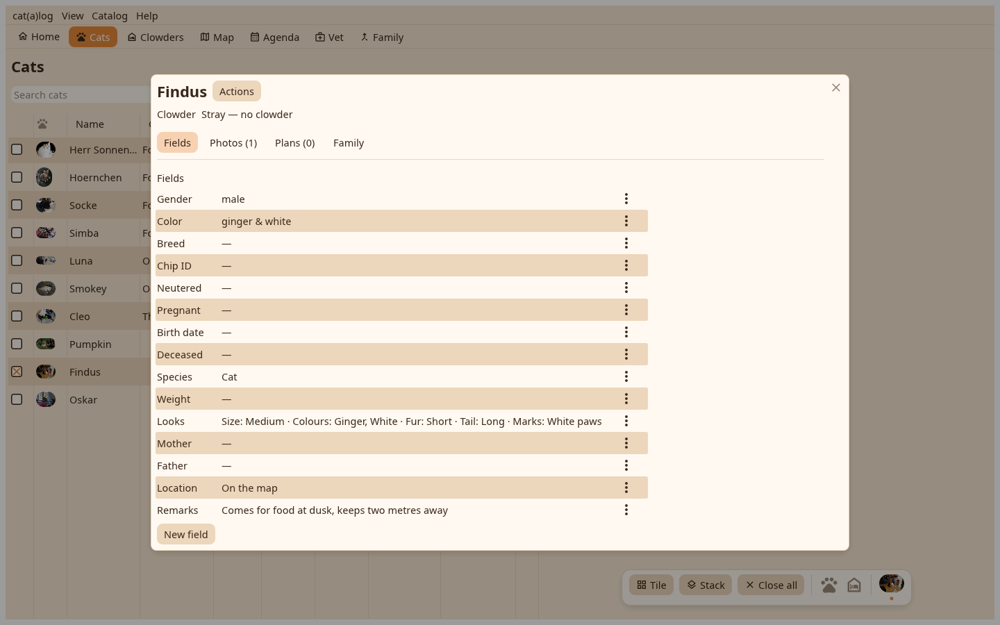
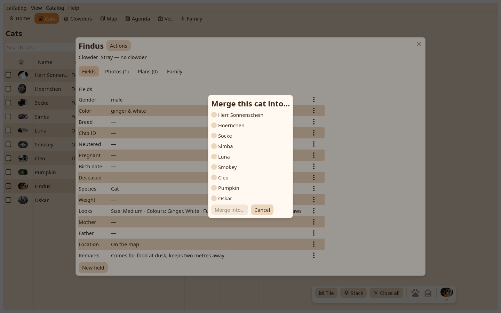

1. The page
The page of the record that will go, with its Actions menu.

2. The merge
Merge this cat into… asks for the survivor and says what moves. A moment is recorded first; the merge cannot be undone.

Two records of one cat become one; you pick the survivor.
The page of the record that will go, with its Actions menu.

Merge this cat into… asks for the survivor and says what moves. A moment is recorded first; the merge cannot be undone.
